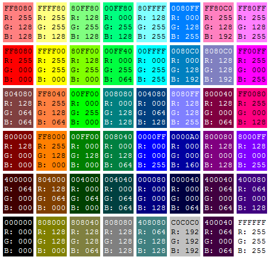

Безопасная палитра цветов – это общепринятый стандарт для web-дизайнеров. Существует множество платформ и еще большее количество браузеров для этих платформ и все они воспринимают цвета по-разному. Для того, чтобы передать пользователям правильный цвет была составленна таблица цветов, которые ввиду особенности их цветового кода отображаются одинаково правильно на всех платформах и во всех браузерах.
Безопасная цветовая палитра - это набор из 216 цветов, общих для всех инструментальных платформ. Каждый из них может быть задан однобайтовым кодом. Их 216 потому, что 8_битовое определение позволяет задать 256 цветов (28). Однако принято, чтобы поле в 40 и цветов было зарезервировано для операционной системы, тогда 216 цветов остаются для применения в прикладных программах пользователей. Картинки, отображаемые на мониторах компьютеров, способных правильно передать 256 цветов (8-битовая графика), отображаются правильно (и предсказуемо) и при условии применения 216 безопасных цветов. Остальные краски передаются как смесь компонентов из безопасной палитры.

Вопрос адекватного отражения цветов имел большое значение несколько лет назад, когда в повсеместном использовании были компьютеры с 8-битовой графической картой. Хорошим тоном считалось применение на Web_страницах именно безопасного цветового набора. Теперь же мы все пользуемся 24-битовой графикой. Поэтому кажется более целесообразным использовать всю полноту возможностей, представляемых современными компьютерами, и применять на Web_страницах различные сочетания цветов, в том числе и тех, что выходят за рамки безопасной палитры.